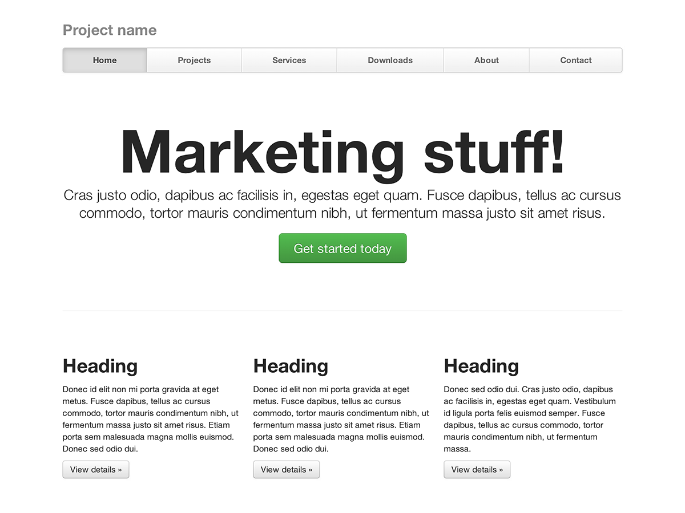
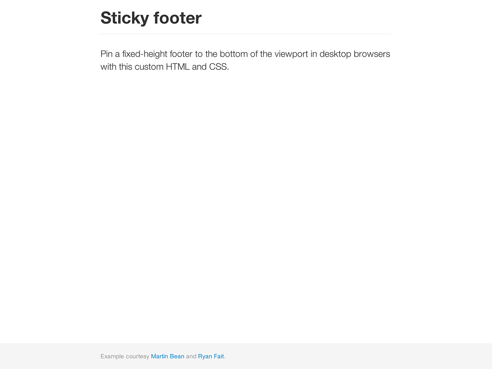

1. What is Compusoft?
Remember when technology seemed more innocent? When computers were clunky, screens were green, and AI was just science fiction? "Compusoft" is a dark comedy short that brings these worlds together - combining vintage '80s office nostalgia with our modern anxieties about artificial intelligence.
Support CompuSoft R&D
Your investment helps CompuSoft's dedicated team of filmmakers develop a one-of-a-kind comedy.
CompuSoft PhotoNet™
Experience our revolutionary new PhotoNet™ image sharing system, now available via Instagram! View instant digital photographs of our development process through your home terminal. *Requires 1200 baud modem and color monitor.
2. System Requirements
The CompuSoft™ Operating Environment has been optimized for maximum compatibility across current-generation business computing systems.
Recommended hardware configuration:
MINIMUM SPECIFICATIONS:
├── PROCESSOR
│ ├── Intel 80286 (8MHz)
│ ├── 640K RAM
├── DISPLAY
│ ├── CGA/EGA Compatible
│ ├── Monochrome or Color
├── STORAGE
│ ├── 20MB Hard Drive
│ ├── 5.25in Floppy Drive
└── PERIPHERALS
├── IBM PC/AT Compatible Keyboard
└── Hayes Compatible Modem (Optional)
CompuSoft™ maintains strict quality control standards for all authorized hardware configurations.
For optimal performance, we recommend using IBM PC/AT or compatible systems. An
optional math co-processor may be required for advanced features.
*WARNING: Unauthorized hardware configurations may result in data loss or system instability.
3. What's included
Compusoft combines vintage aesthetics with modern storytelling, bringing together period-accurate technology, authentic filming techniques, and not-so-serious commentary on AI through a distinctly '80s lens.
Production Elements
Authentic '80s Corporate Aesthetic
Meticulously recreated early tech company environment complete with beige cubicles, chunky monitors, and those perfectly soul-crushing motivational posters that defined corporate America.
Hybrid Filming Technique
Select scenes captured on genuine VHS cameras, blending authentic analog footage with modern digital cinematography to create a unique visual experience that truly captures the era.
AI Through a Retro Lens
A fresh take on artificial intelligence stories by exploring modern AI anxieties through the charmingly limited technological scope of the 1980s.
Period-Accurate Tech
Featuring real vintage hardware, from IBM PC/ATs to classic Apple computers, creating an authentic world where cutting-edge AI meets floppy disks and dial-up modems.
4. Examples
Move beyond the base template with a few example layouts. We encourage folks to iterate on these examples and not simply use them as an end result.
-
Starter template
A barebones HTML document with all the Bootstrap CSS and JavaScript included.
-
Basic marketing site
Featuring a hero unit for a primary message and three supporting elements.
-

Fluid layout
Uses our new responsive, fluid grid system to create a seamless liquid layout.
-

Narrow marketing
Slim, lightweight marketing template for small projects or teams.
-

Justified nav
Marketing page with equal-width navigation links in a modified navbar.
-
Sign in
Barebones sign in form with custom, larger form controls and a flexible layout.
-

Sticky footer
Pin a fixed-height footer to the bottom of the user's viewport.
-
Carousel jumbotron
A more interactive riff on the basic marketing site featuring a prominent carousel.
What next?
Interested in investing? Check out our Seed & Spark page for unique incentives and for more information about the project!
DONATE NOW